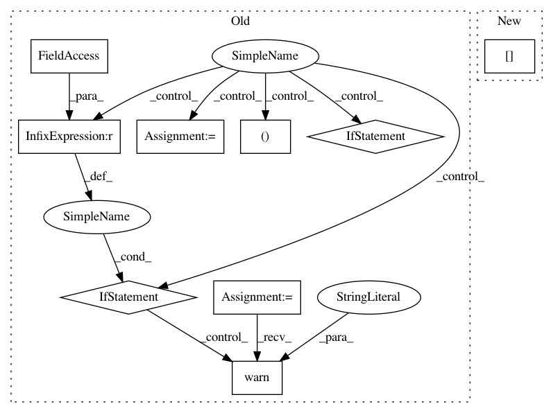

9418883d418ecccd7fe5da4dddffdc01064efb23,ilastik/workflows/carving/splitBodyCarvingWorkflow.py,SplitBodyCarvingWorkflow,__init__,#SplitBodyCarvingWorkflow#Any#Any#Any#Any#Any#,74
Before Change
self._applets.append(self.splitBodySupervoxelExportApplet)
self._split_tool_params = None
if workflow_cmdline_args:
arg_parser = argparse.ArgumentParser(description="Specify parameters for the split-body carving workflow")
arg_parser.add_argument("--split_tool_param_file", required=False)
parsed_args, unused_args = arg_parser.parse_known_args(workflow_cmdline_args)
if unused_args:
logger.warn("Unused command-line args: {}".format( unused_args ))
if parsed_args.split_tool_param_file is None:
logger.warn("Missing cmd-line arg: --split_tool_param_file")
else:
logger.debug("Parsing split tool parameters: {}".format( parsed_args.split_tool_param_file ))
json_parser = JsonConfigParser( SplitToolParamsSchema )
self._split_tool_params = json_parser.parseConfigFile( parsed_args.split_tool_param_file )
def onProjectLoaded(self, projectManager):
Overridden from Workflow base class. Called by the Project Manager.
After Change
"_schema_version" : 0.1,
// Input data
"raw_data_info" : JsonConfigParser( DatasetInfo.DatasetInfoSchema ),
"pixel_probabilities_info" : JsonConfigParser( DatasetInfo.DatasetInfoSchema ),
"raveler_labels_info" : JsonConfigParser( DatasetInfo.DatasetInfoSchema ),
In pattern: SUPERPATTERN
Frequency: 3
Non-data size: 9
Instances
Project Name: ilastik/ilastik
Commit Name: 9418883d418ecccd7fe5da4dddffdc01064efb23
Time: 2014-03-26
Author: bergs@janelia.hhmi.org
File Name: ilastik/workflows/carving/splitBodyCarvingWorkflow.py
Class Name: SplitBodyCarvingWorkflow
Method Name: __init__
Project Name: tensorflow/cleverhans
Commit Name: f9dd2e3636db61ee1b4d32ee4f494fd9e71adc12
Time: 2017-03-29
Author: ngp5056@cse.psu.edu
File Name: cleverhans/attacks.py
Class Name: FastGradientMethod
Method Name: generate_np
Project Name: tensorflow/cleverhans
Commit Name: f9dd2e3636db61ee1b4d32ee4f494fd9e71adc12
Time: 2017-03-29
Author: ngp5056@cse.psu.edu
File Name: cleverhans/attacks.py
Class Name: Attack
Method Name: generate_np